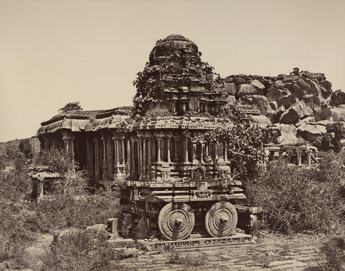

Hampi or Hampe, also referred to as the Group of Monuments at Hampi, is a UNESCO World Heritage Site located in Hampi town, Vijayanagara district, east-central Karnataka, India.
Hampi was the capital of the Vijayanagara Empire in the 14th century.It was a fortified city. Chronicles left by Persian and European travellers, particularly the Portuguese, say that Hampi was a prosperous, wealthy and grand city near the Tungabhadra River, with numerous temples, farms and trading markets. By 1500 CE, Hampi-Vijayanagara was the world's second-largest medieval-era city after Beijing, and probably India's richest at that time, attracting traders from Persia and Portugal.The Vijayanagara Empire was defeated by a coalition of Muslim sultanates; its capital was conquered, pillaged and destroyed by sultanate armies in 1565, after which Hampi remained in ruins.

Ancient to 14th century CE
Emperor Ashoka's Rock Edicts in Nittur and Udegolan—both in Bellary district 269-232 BCE—suggest this region was part of the Maurya Empire during the 3rd century BCE. A Brahmi inscription and a terracotta seal dating to about the 2nd century CE have been found during site excavations.The town is mentioned in Badami Chalukya's inscriptions as Pampapura; dating from between the 6th and 8th centuries.
By the 10th century, it had become a centre of religious and educational activities during the rule of the Hindu kings Kalyana Chalukyas, whose inscriptions state that the kings made land grants to the Virupaksha temple. Several inscriptions from the 11th to 13th centuries are about the Hampi site, with a mention of gifts to goddess Hampa-devi. Between the 12th and 14th centuries, Hindu kings of the Hoysala Empire of South India built temples to Durga, Hampadevi and Shiva, according to an inscription dated about 1,199 CE. Hampi became the second royal residence; one of the Hoysala kings was known as Hampeya-Odeya or "lord of Hampi".
14th century and after
The armies of the Delhi Sultanate, particularly those of Alauddin Khalji and Muhammad bin Tughlaq, invaded and pillaged South India. The Hoysala Empire and its capital Dvarasamudra in southern Karnataka was plundered and destroyed in the early 14th century by the armies of Alauddin Khalji,and again in 1326 CE by the army of Muhammad bin Tughlaq.
The Kampili kingdom in north-central Karnataka followed the collapse of Hoysala Empire. It was a short-lived Hindu kingdom with its capital about 33 kilometres (21 mi) from Hampi.The Kampili kingdom ended after an invasion by the Muslim armies of Muhammad bin Tughlaq. The Hindu women of Kampili committed jauhar (ritual mass suicide) when the Kampili soldiers faced defeat by Tughlaq's army.In 1336 CE, the Vijayanagara Empire arose from the ruins of the Kampili kingdom. It grew into one of the famed Hindu empires of South India that ruled for over 200 years.